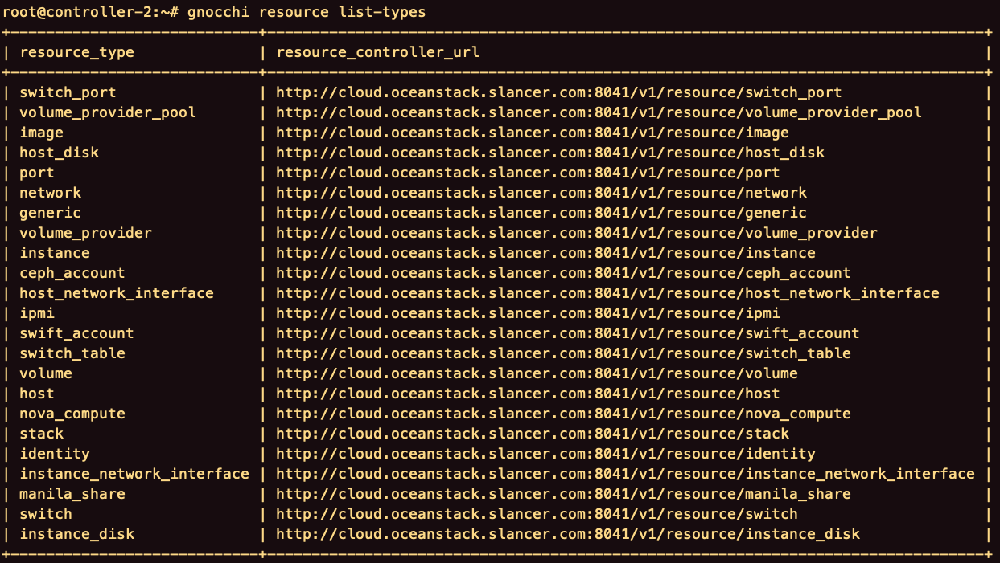
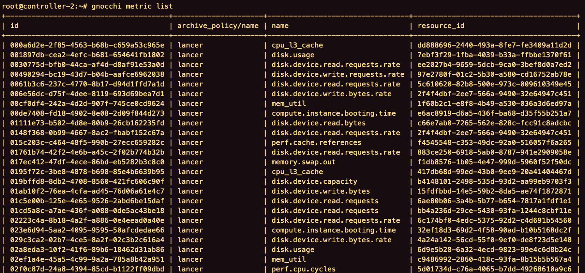
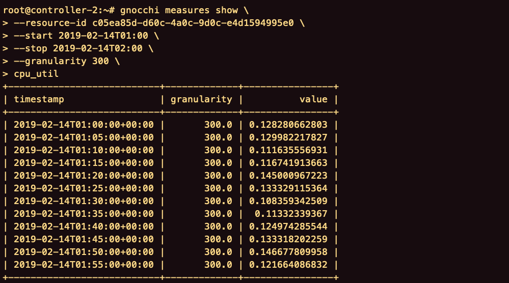
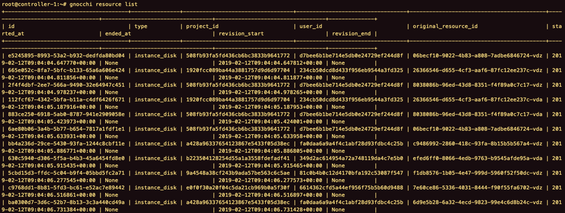
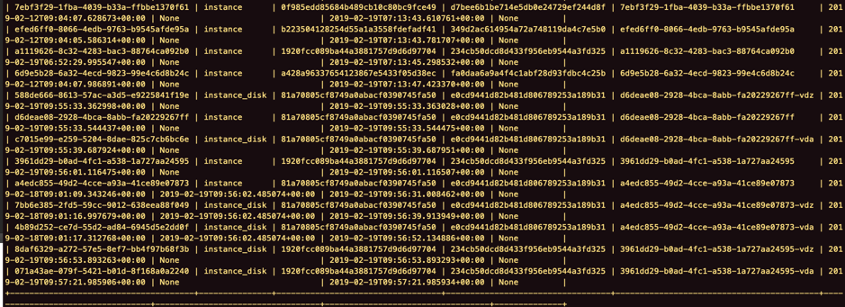

目录
- gnocchi
- gnocchi_setup.yml
- 配置文件
- ceilometer
- ceilometer_gnocchi_integration.yml
- integrate.yml
- 新建archive-policy
- 删除archive-policy-rule
- upgrade
- 验证
- Resource
- Resource types
- Metric
- Measures
- 遇到的问题
- 资源类型只为instance或instance_disk
gnocchi
部署节点运行。
1
| ansible-playbook -i inventory/cloude_nodes gnocchi_setup.yml
|
gnocchi_setup.yml
1
2
3
4
5
6
7
8
9
10
11
12
13
| ---
- name: Setup gnocchi
hosts:
- controller
vars_files:
- vars/common.yml
- vars/deploy.yml
- vars/astute.yaml
- vars/globals.yaml
vars:
action: deploy
roles:
- role: gnocchi
|
配置文件
gnocchi-api的配置文件wsgi-gnocchi.conf，位于/etc/oceanstack/gnocchi/gnocchi-api，映射到名为gnocchi_api的Docker容器的/etc/apache2/sites-enabled/的路径下，改名为gnocchi-api.conf。
1
2
3
4
5
6
7
8
9
10
11
12
13
14
15
16
| Listen 2.3.3.54:8041
TraceEnable off
<VirtualHost *:8041>
ErrorLog "/var/log/kolla/gnocchi/gnocchi-api-error.log"
LogFormat "%{X-Forwarded-For}i %l %u %t \"%r\" %>s %b %D \"%{Referer}i\" \"%{User-Agent}i\"" logformat
CustomLog "/var/log/kolla/gnocchi/gnocchi-api-access.log" logformat
WSGIApplicationGroup %{GLOBAL}
WSGIDaemonProcess gnocchi group=gnocchi processes=8 threads=1 user=gnocchi
WSGIProcessGroup gnocchi
WSGIScriptAlias / "/usr/bin/gnocchi-api"
<Directory "/usr/bin">
Require all granted
</Directory>
</VirtualHost>
|
ceilometer
部署节点运行。
1
| ansible-playbook -i inventory/cloude_nodes ceilometer_gnocchi_integration.yml
|
ceilometer_gnocchi_integration.yml
1
2
3
4
5
6
7
8
| ---
- name: ceilometer_gnocchi_integration
hosts:
- node
vars:
action: integrate
roles:
- role: ceilometer
|
integrate.yml
1
2
3
4
5
6
7
8
9
10
11
12
13
14
15
16
17
18
19
20
21
22
23
24
25
26
27
28
29
30
31
32
33
34
35
36
37
38
39
40
41
42
43
44
45
46
47
48
49
50
51
52
53
54
55
56
57
58
59
60
61
62
63
64
65
66
67
68
69
70
71
72
73
| ---
- name: modify ceilometer.conf meter_dispatchers
lineinfile:
path: /etc/ceilometer/ceilometer.conf
regexp: '^meter_dispatchers'
line: 'meter_dispatchers = gnocchi'
- name: modify ceilometer.conf event_dispatchers
lineinfile:
path: /etc/ceilometer/ceilometer.conf
regexp: '^event_dispatchers'
line: 'event_dispatchers = gnocchi'
- name: add ceilometer.conf filter_service_activity
lineinfile:
path: /etc/ceilometer/ceilometer.conf
insertafter: '^#filter_service_activity'
line: 'filter_service_activity = False'
- name: add ceilometer.conf resources_definition_file
lineinfile:
path: /etc/ceilometer/ceilometer.conf
insertafter: '^#resources_definition_file'
line: 'resources_definition_file = gnocchi_resources.yaml'
- name: add ceilometer.conf archive_policy
lineinfile:
path: /etc/ceilometer/ceilometer.conf
insertafter: '^#archive_policy'
line: 'archive_policy = lancer'
- name: add ceilometer.conf url
lineinfile:
path: /etc/ceilometer/ceilometer.conf
insertafter: '^#url = <None>'
line: 'url = http://2.3.3.52:8041'
- name: add ceilometer.conf filter_project
lineinfile:
path: /etc/ceilometer/ceilometer.conf
insertafter: '^#filter_project'
line: 'filter_project = services'
- name: restart ceilometer-agent-central
when: inventory_hostname in groups['controller']
service:
name: ceilometer-agent-central
state: restarted
- name: restart ceilometer-agent-notification
when: inventory_hostname in groups['controller']
service:
name: ceilometer-agent-notification
state: restarted
- name: restart ceilometer-api
when: inventory_hostname in groups['controller']
service:
name: ceilometer-api
state: restarted
- name: restart ceilometer-collector
when: inventory_hostname in groups['controller']
service:
name: ceilometer-collector
state: restarted
- name: restart ceilometer-polling
service:
name: ceilometer-polling
state: restarted
|
新建archive-policy
新建名为lancer的archive-policy。
1
2
3
4
5
6
7
8
| gnocchi archive-policy create \
-d granularity:1m,points:10080 \
-d granularity:5m,points:8640 \
-d granularity:15m,points:2880 \
-d granularity:30m,points:1440 \
-d granularity:60m,points:8760 \
-d granularity:360m,points:21600 \
lancer
|
删除archive-policy-rule
删除名为default的archive-policy-rule。
1
| gnocchi archive-policy-rule delete default
|
新建名为lancer的archive-policy-rule。
1
| gnocchi archive-policy-rule create -a lancer -m * lancer
|
-a，–archive-policy-name，archive-policy的名字。
-m，–metric-pattern，要匹配的指标名称。*为全部匹配。
upgrade
进入每一个控制节点上的gnocchi_api容器，执行。
进入每一个控制节点上的ceilometer_notification容器，执行。
1
| ceilometer-upgrade --noskip-gnocchi-resource-types
|
验证
Resource

Resource types
1
| gnocchi resource list-types
|

Metric

Measures
1
2
3
4
5
6
| gnocchi measures show \
--resource-id c05ea85d-d60c-4a0c-9d0c-e4d1594995e0 \
--start 2019-02-14T01:00 \
--stop 2019-02-14T02:00 \
--granularity 300 \
cpu_util
|
1
2
3
4
5
| gnocchi measures show \
--start 2019-04-09T02:20 \
--granularity 60 \
--resource-id f4545548-c353-49dc-92a0-516057f6a265 \
network_in_rate
|

遇到的问题
资源类型只为instance或instance_disk
Gnocchi部署完成后，资源类型成功创建。
但是，创建的资源的类型只有instance和instance_disk两种


在gnocchi_api容器内执行gnocchi-upgrade，在ceilometer_notification容器内执行ceilometer-upgrade，结果均未发生变换。
相关服务。